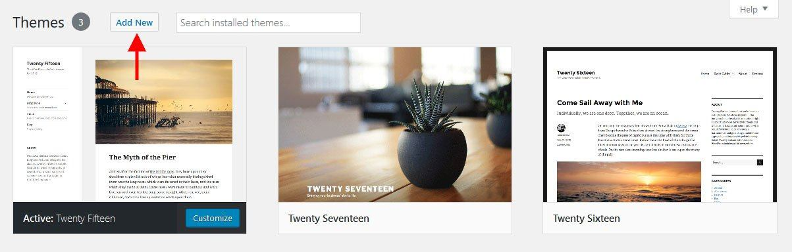
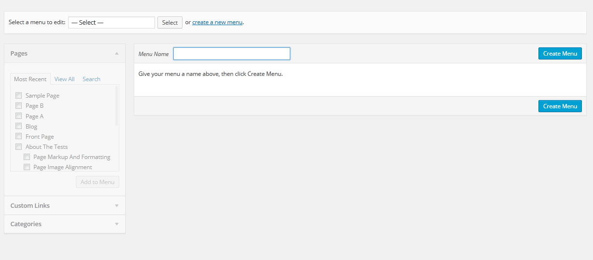
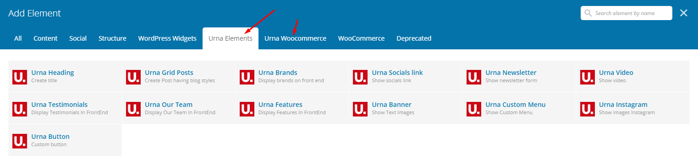
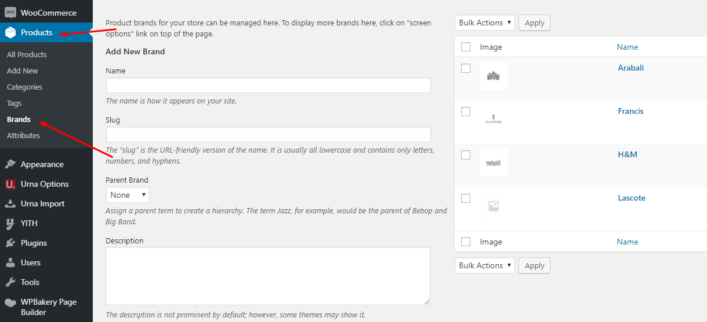
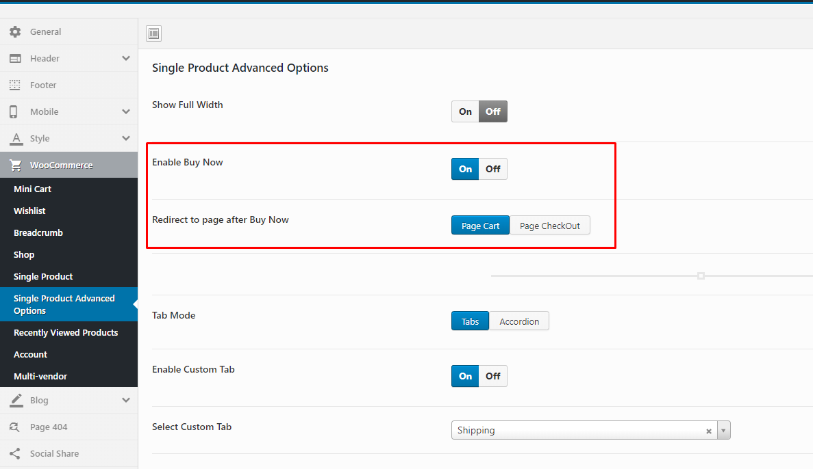
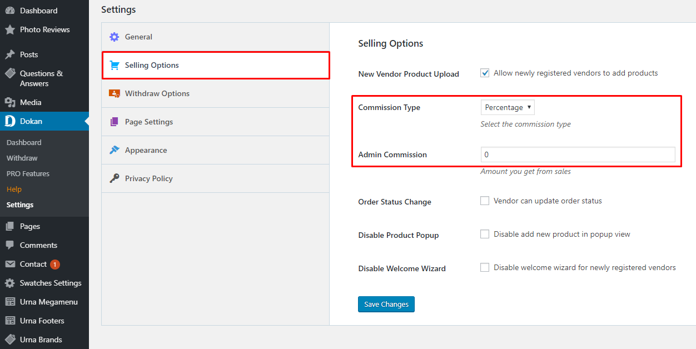
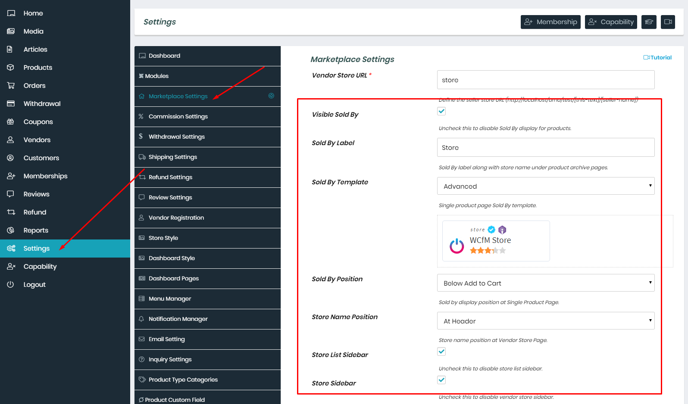
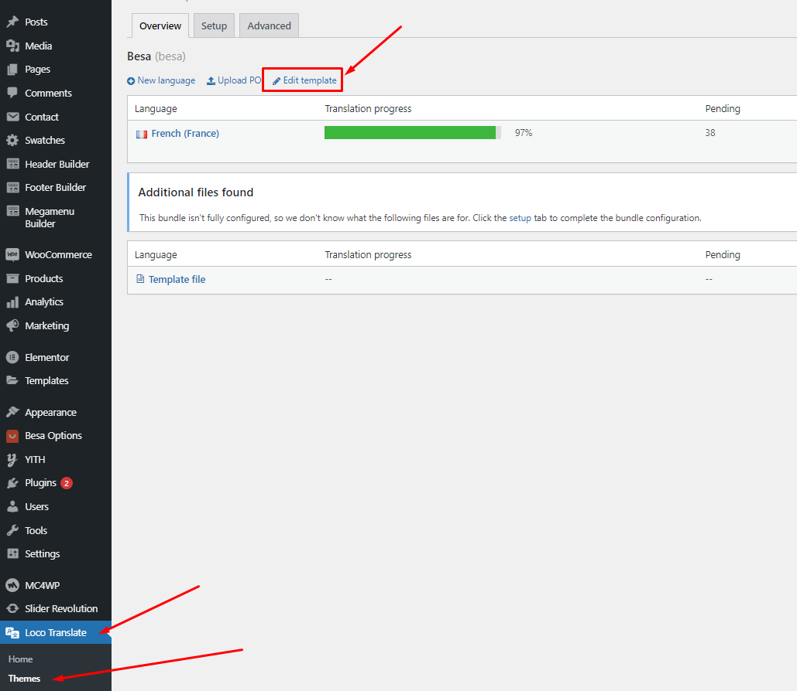

General
Last update: December 29, 2020Urna - All-in-one WooCommerce WordPress Theme
Urna is a flexible and customizable WooCommerce Multi-Store WordPress Theme that installs and changes any item in a matter of minutes via Powerful Theme Options. Urna is the best our premium theme, so surely you will be satisfied with it.
Urna rocks a handy mobile menu which will take your shoppers to their desired product effortlessly. In total, you receive a whopping three hundred pages and get to benefit from the one-click demo content import. Enjoy the multiple contents now and have an eCommerce page up in close to no time. You can create an excellent outcome that will drive your sales and help you grow your business to a new degree.
Urna can be used for a variety of purposes, specially built store for the Fashion, Furniture, Electronics,... Urna is fully compatible with all SEO standards helping your business have a high search on Google Search. Each page of Urna is fully compliant, so it can be viewed easily regardless of different screen devices such as desktops, tablets and mobile phones. All that makes your customers have an enjoyable shopping experience.
Urna is high quality and intelligent design that comes with 24+ different demos that will give you a great choice. You will easily find the best for your purpose without spending too much time.
It features deep integration with WooCommerce core plus several of the most popular plugins:
- Redux Framework
- Elementor Page Builder
- WPBakery Page Builder (formerly Visual Composer)
- Slider Revolution Responsive
- WOOF - WooCommerce Products Filter
- WooCommerce Currency Switcher
- Nextend Social Login and Register
- YITH WooCommerce Wishlist
- YITH WooCompare
- Contact Form 7
- MailChimp for WordPress
- WooCommerce Variation Swatches
- Notification for WooCommerce
And Marketplace Plug-ins Compatibility:
We thank you for purchasing our theme. Hope our theme will be of great help for you to succeed. We appreciate your decision to read the manual before the request for our support.
Requirement
To install this theme you must have a working version of WordPress. Please refer to WordPress documentation for further instructions. You can download the latest version of WordPress here https://wordpress.org/download/
- Wordpress 4.6 or higher
- WooCommerce 4.0 or higher
- For best performance we recommend using PHP 7.2 or higher.
- MySQL 5.6 or greater OR MariaDB 10.0 or greater
- Nginx or Apache with mod_rewrite module
- This theme is tested under Mac, Windows and Linux.

If the import stalls and fails to respond after a few minutes, or it fails with a simple error message like “Import failed,” You are suffering from PHP configuration limits that are set too low to complete the process. You should contact your web host and ask them to increase those limits to a minimum as follows:
- max_execution_time 3600
- max_input_time 3600
- memory_limit 256M
- post_max_size 64M
- upload_max_filesize 64M
- max_input_vars 3000
- allow_url_fopen on (!important)
- Please install the XMLReader PHP extension on your server
Free Support
All of our items come with free support, and we have an advanced ticket system to handle your requests. Support is limited to questions regarding the theme’s features or problems with the theme. We are not able to provide support for code customizations or third-party plugins. If you need help with anything other than minor customizations of your theme, we suggest enlisting the help of a developer.
How To Receive Free Support
- Step 1 – Go to Ticket System (https://tickets.thembay.com/) and Click Submit a ticket.
- Step 2 – Provide all requires information: Product Name, Purchase Code, your username on Themeforest.net and URL to your page to verify your license.
- Step 3 – Provide more details about the problem, descibe, screenshot ...
- Step 4 – Submit ticket and wait our response (within 14-24 hours)
How to find your ThemeForest Item Purchase Code
To find your licence key/purchase code you need to log into your ThemeForest account and go to your Downloads page.
Locate some of the Themes Kingdom themes you purchased in your Downloads list and click on the Download and next on the License Certificate & purchase code link in drop-down menu.
After you have downloaded the certificate you can open it in a text editor such as Notepad and copy the Item Purchase Code.

Install Theme
Last update: April 06, 2020Download Package from ThemeForest
After purchasing our theme, you need to go your download area, click on button Download and select download All files & documentation.
Extract Package
After download completed, you need to unzip the package and select the way you want to install the theme.

Once the download is complete, unzip the file and you would see the following packages:
- Documentation - our detail documentation for the theme
- Licensing - the theme license
- Plugins - the Bundled Plugins
- Sample Data - the sample data of the demos, you can import it
- Theme - for manual installation
Installation Theme
You can install Urna theme directly in Wordpress Admin or upload files via FTP
1. Theme Installation via WordPress
Please, follow the steps below to install Urna Theme (Make sure you had extract files).
- Step 1 – Login to your WordPress Dasrdoard.
- Step 2 – Navigate to Appearance ► Themes.
-
Step 3 – Click Add New button on top of the page.

- Step 4 – Then click Upload Theme
-
Step 5 – Next, Browse to the zip file and click Install now for the theme to be uploaded and installed.

- Step 6 – After done installing, click Activate the theme
You need install all required plugins after install parent theme. You should only install Child theme after complete install all required plugin.
Watch the video "Theme Installation via WordPress" tutorial2. Theme Installation via FTP
Using an FTP software like File Zilla or CuteFTP to upload the theme files to your WordPress site.
The first, extract the theme file "urna.zip", you will have a folder "urna" include all theme files and folders (css, images, fonts...).
Please, follow the steps below to install the theme via FTP:
- Step 1 – Log into your hosting space (server) via FTP client.
- Step 2 – In extracted archive folder, find urna.
- Step 3 – Upload the urna folder to your server in path ROOT/wp-content/themes/.
- Step 4 – The uploaded path should be like this: ROOT/wp-content/themes/urna/.
- Step 5 – Login to your WordPress Dasrdoard and go to Appearance ► Themes and activate the Urna theme.
Installation Plugins
Please, follow the steps below to install required plugins:
-
Step 1 - After activating the theme, you will be asked to installed the required and recommended plugins, you can proceed by clicking on Begin installing plugins
-
Step 2 – In the next page, check all the plugins that you want to install then on the drop down Bulk Actions, choose Install then click Install, the plugin installation process will start.
-
Step 3 – Check all the plugins that you want to activate then on the drop down Bulk Actions, choose Activate and click Apply, the plugin installation process will start. Wait for all the plugin activated then you can start customizing your website as you wish
Recommended Plugins
In order for the website to function well, similar to our demo functions, I recommend you to install the following plugins. Please note, you do not need to install them if you do not need it.
Here are the plugins that we recommend:
Import Sample Data - WPBakery
Last update: September 08, 2020Requirement
We very happy to provide for customer a new function to import data more quickly. It is "One click import"
With "One click import", customer do not import step by step data as import usual. It import all data like : Content, Widget, Revolution slider, Menu, Customize...
To use the "One click import" function, you need to meet the following requirements:
- Active parent theme
- Uploads folder writable
- For best performance we recommend using PHP 7.2 or higher.
- MySQL 5.6 or greater OR MariaDB 10.0 or greater
- Nginx or Apache with mod_rewrite module
- HTTPS support
- Memory Limit 512M or higher
Import All Sample Data - for a new website
- Step 1 - Login to your WordPress Dasrdoard.
- Step 2 (Important Step) - Deactivate the plugin Elementor
- Step 3 (Options) - Install the Marketplace plugin that you will be using. It will make the imported data more standard. Can be ignored if you have the plugin installed or do not need to use it
- Dokan
- WC Marketplace
- WCFM
- WC Vendors

- Step 4 - Go to Appearance > Theme Setup > Click to Start
- Step 5 - Install Child Theme

- Step 6 - Import Content: Select the Demo you want, then click to Import
The process may take some time. Please wait
All done. Have fun!

- Step 7 - Save information all products (fix errors not showing Categories, products)
7.1 "Quick Edit" any product.
7.2 Check all categories, then click Update

- Step 8 - Choose Shop Page: Go to WooCommerce > Settings > Products > General > Shop Page
- Step 9 - Choose Cart and Checkout Page: Go to WooCommerce > Settings > Advanced

- Step 10 - Configure Mega Menu
- Step 11 - Enable WPBakery for Tbay Footer
Import All Sample Data and import the configure for website available.
If you have a website with data available, follow these steps to use the "Urna" theme for your website.
- Step 1 - Install and activate theme.
- Step 2 - Deactivate and Delete the plugins "Thembay Elementor", "Tbay Framework Pro", "Tbay Framework" (If they exist in your old Theme)
- Step 3 - Install and activate the required plugins.
- Step 4 (Important Step) - Deactivate the plugin Elementor
- Step 5 (Options) - Install the Marketplace plugin that you will be using. It will make the imported data more standard. Can be ignored if you have the plugin installed or do not need to use it
- Dokan
- WC Marketplace
- WCFM
- WC Vendors
- Step 6 - Go to Appearance > Theme Setup > Click to Start
- Step 7 - Install Child Theme
- Step 8 - Import Content: Select the Demo you want (Uncheck the content section), then click to Import
The process may take some time. Please wait
All done. Have fun!
- Step 9 - Create a Home Page with the template we provide
Turn Off Breadcrumb on Homepage
Select Homepage Displays
- Step 10 - Enable WPBakery for Tbay Footer
- Step 11 - Create Footer with the template we provide
Select Footer Layout in the Theme Options
- Step 12 - Choose Shop Page: Go to WooCommerce > Settings > Products > General > Shop Page
- Step 13 - Choose Cart and Checkout Page: Go to WooCommerce > Settings > Advanced
- Step 14 - Manual Import Revolution Slider
- Step 15 - Import MailChimp form
See detailed instructions here https://docs.urnawp.com/#use-mailchimp
Use "Wordpress Reset" plugin if you want import sample data one again or import the data of another demo
Each Urna's skin uses a separate data, so if you want to switch between skins you need to reset the data, then import the data again.
Use this plugin to reset the WordPress database : https://wordpress.org/plugins/wordpress-reset/
Follow these steps:
- Step 1 - Install Wordpress Reset plugin.
- Step 2 - Reset Database
- Step 3 - Configure the Theme Setup as instructed above
Error or Problem when import sample data
For best performance we recommend using PHP 7.2 or higher. Most people have problems when PHP < 7
1. Page not found
In this case, you only need to import the data again.
Watch the video "Page not found when import sample data" tutorial2. Other issues
If you have problems importing the demo ( example : infinite loading, error 505 with when using wordpress importer ) then you may have a problem with the server settings. Please check these:
1. If the import stalls and fails to respond after a few minutes, or it fails with a simple error message like “Import failed,” You are suffering from PHP configuration limits that are set too low to complete the process. You should contact your web host and ask them to increase those limits to a minimum as follows:
- max_execution_time 3600
- max_input_time 3600
- memory_limit 256M
- post_max_size 64M
- upload_max_filesize 64M
- max_input_vars 3000
- allow_url_fopen on (!important)
You can verify your PHP configuration limits by installing a simple plugin found here. And you can also check your PHP error logs to see the exact error being returned.
2. Also if possible update your PHP version to 7.2
3. Save all config in Woocommerce before import data
After doing this you can reset your database using the WordPress Database Reset Plugin and try to re-import the demo data ( WARNING : Reset the database will make you lost all the data of your current wordpress )
If you still have problem your web host may uses process watching software that prevents bulk processing on their web servers.
If you have problem please submit a ticket and we will help you to import the demo.
Import Sample Data - Elementor
Last update: December 29, 2020Requirement
We very happy to provide for customer a new function to import data more quickly. It is "One click import"
With "One click import", customer do not import step by step data as import usual. It import all data like : Content, Widget, Revolution slider, Menu, Customize...
To use the "One click import" function, you need to meet the following requirements:
- Active parent theme
- Uploads folder writable
- For best performance we recommend using PHP 7.2 or higher.
- MySQL 5.6 or greater OR MariaDB 10.0 or greater
- Nginx or Apache with mod_rewrite module
- HTTPS support
- Memory Limit 256M or higher
Import All Sample Data - for a new website
- Step 1 - Login to your WordPress Dasrdoard.
- Step 2 (Important Step) - Deactivate the plugin WPBakery
- Step 3 (Options) - Install the Marketplace plugin that you will be using. It will make the imported data more standard. Can be ignored if you have the plugin installed or do not need to use it
- Dokan
- WC Marketplace
- WCFM
- WC Vendors
- Step 4 - Go to Appearance > Theme Setup > Click to Start
- Step 5 - Install Child Theme
- Step 6 - Import Content: Select the Demo you want, then click to Import
The process may take some time. Please wait
All done. Have fun!
- Step 7 - Save information all products (fix errors not showing Categories, products)
7.1 "Quick Edit" any product.
7.2 Check all categories, then click Update
- Step 8 (Important Step) - Regenerate CSS for Elementor: Styles set in Elementor are saved in CSS files in the uploads folder. Recreate those files, according to the most recent settings.

- Step 9 - Elementor Settings: Enable Elementor for Urna Header Elementor, Urna Footer, Urna Megamenu, Urna Custom Tabs, Disable Default Colors, Disable Default Fonts.
- Step 10 - Replace URL: Enter your old and new URLs for your WordPress installation, to update all Elementor data.
- Old Url: That is our demo link, eg: https://elementor.urnawp.com/
- New Url: Your website's link

- Step 11 - Choose Shop Page: Go to WooCommerce > Settings > Products > General > Shop Page
When you install the WooCommerce plugin, your website will automatically create a Shop page. Therefore, when importing Aora data, it will have two Shop pages. You need to delete a page. Please follow this video:
- Step 12 - Choose Cart and Checkout Page: Go to WooCommerce > Settings > Advanced
- Step 13 - Configure Mega Menu
- Step 14 - Configure the Product Attributes
You need to match the types of attributes, eg: Color => Type = Color

Import All Sample Data and import the configure for website available.
If you have a website with data available, follow these steps to use the "Urna" theme for your website.
- Step 1 - Install and activate theme.
- Step 2 - Deactivate and Delete the plugins "Thembay Elementor", "Tbay Framework Pro", "Tbay Framework" (If they exist in your old Theme)
- Step 3 - Install and activate the required plugins.
- Step 4 (Important Step) - Deactivate the plugin WPBakery
- Step 5 (Options) - Install the Marketplace plugin that you will be using. It will make the imported data more standard. Can be ignored if you have the plugin installed or do not need to use it
- Dokan
- WC Marketplace
- WCFM
- WC Vendors
- Step 6 - Go to Appearance > Theme Setup > Click to Start
- Step 7 - Install Child Theme
- Step 8 - Import Content: Select the Demo you want (Uncheck the content section), then click to Import
The process may take some time. Please wait
All done. Have fun!
- Step 9 (Important Step) - Regenerate CSS for Elementor: Styles set in Elementor are saved in CSS files in the uploads folder. Recreate those files, according to the most recent settings.
- Step 10 - Elementor Settings: Enable Elementor for Urna Header Elementor, Urna Footer, Urna Megamenu, Urna Custom Tabs, Disable Default Colors, Disable Default Fonts.
- Step 11 - Create a Home Page with the template we provide


Turn Off Breadcrumb on Homepage
Select Homepage Displays
Watch the video "Create a Home Page with the template we provide" tutorial
- Step 12 - Create a Footer with the template we provide
Select Footer Layout in the Theme Options
Watch the video "Create a Footer with the template we provide" tutorial
- Step 13 - Create a Header with the template we provide


Choose Sample Data > elementor > pages > header templates > template-header-xxx.json
Select Header Layout in the Theme Options
- Step 14 - Fix the error of the misaligned icon on the Header.
Click on the menu on the top left
Click to Site Settings
Click to Layout
Widgets Space (px) = 0
- Step 15 - Choose Shop Page: Go to WooCommerce > Settings > Products > General > Shop Page
- Step 16 - Choose Cart and Checkout Page: Go to WooCommerce > Settings > Advanced
- Step 17 - Manual Import Revolution Slider
- Step 18 - Import MailChimp form
See detailed instructions here https://docs.urnawp.com/#use-mailchimp
Use "Wordpress Reset" plugin if you want import sample data one again or import the data of another demo
Each Urna's skin uses a separate data, so if you want to switch between skins you need to reset the data, then import the data again.
Use this plugin to reset the WordPress database : https://wordpress.org/plugins/wordpress-reset/
Follow these steps:
- Step 1 - Install Wordpress Reset plugin.
- Step 2 - Reset Database
- Step 3 - Configure the Theme Setup as instructed above
Error or Problem when import sample data
For best performance we recommend using PHP 7.2 or higher. Most people have problems when PHP < 7
1. Page not found
In this case, you only need to import the data again.
Watch the video "Page not found when import sample data" tutorial2. Other issues
If you have problems importing the demo ( example : infinite loading, error 505 with when using wordpress importer ) then you may have a problem with the server settings. Please check these:
1. If the import stalls and fails to respond after a few minutes, or it fails with a simple error message like “Import failed,” You are suffering from PHP configuration limits that are set too low to complete the process. You should contact your web host and ask them to increase those limits to a minimum as follows:
- max_execution_time 3600
- max_input_time 3600
- memory_limit 256M
- post_max_size 64M
- upload_max_filesize 64M
- max_input_vars 3000
- allow_url_fopen on (!important)
You can verify your PHP configuration limits by installing a simple plugin found here. And you can also check your PHP error logs to see the exact error being returned.
2. Also if possible update your PHP version to 7.2
3. Save all config in Woocommerce before import data
After doing this you can reset your database using the WordPress Database Reset Plugin and try to re-import the demo data ( WARNING : Reset the database will make you lost all the data of your current wordpress )
If you still have problem your web host may uses process watching software that prevents bulk processing on their web servers.
If you have problem please submit a ticket and we will help you to import the demo.
Theme Configuration
Last update: April 07, 2020Set Up Logo
There are 2 ways to upload a Logo. Please follow the instructions below:
1 Upload logo in Theme Options (Select Header Layout = Default)
- Step 1 - Login to your WordPress Dashboard.
- Step 2 - Go to Urna Options > Header
- Step 3 - Upload your logo by clicking on Select Image (our current Urna logo is 126x35px)
- Step 4 - Choose Mobile Logo here:
1Upload logo in Elementor Header Builder (Select Header Layout = Header Builder)
- Step 1 - Select Header Layout = Header Builder

- Step 2 - Go to Urna Header Elementor > Edit with Elementor
- Step 3 - Choose Custom Logo
- Step 4 - Choose Mobile Logo here:
Set Up Menu
1 Creating your menu
- Step 1- Login to the WordPress Dashboard.
- Step 2- From the 'Appearance' menu on the left-hand side of the Dashboard, select the 'Menus' option to bring up the Menu Editor. 
- Step 3 - Select Create a new menu at the top of the page.
- Step 4 - Enter a name for your new menu in the Menu Name box.
- Step 5 - Click the Create Menu button. Your menu is now defined, and you can now add pages to it (steps below).
2 Adding pages to your menu
- Step 1 - Locate the pane entitled Pages.
- Step 2 - Within this pane, select the View All link to bring up a list of all the currently published Pages on your site.
- Step 3 - Select the Pages that you want to add by clicking the check box next to each Page's title.
- Step 4 - Click the Add to Menu button located at the bottom of this pane to add your selection(s) to the menu that you created in the previous step.
- Step 5 - Click the Save Menu button once you've added all the menu items you want. Your custom menu has now been saved.
The Screen Options allow you to choose which items you can use to add to a menu. Certain items, like Posts or Products are hidden by default. The Screen Options are located in the top right corner of your WordPress Dashdoard.


3 Assigning a Menu to a Location
Once you've created a menu and filled it with items, it's time to assign it to one of the theme pre-defined locations.
- Go to Appearance > Menus and click Manage Locations.
Menu is assigned after import data by "One click import".

4 Configure Mega Menu
With Urna Megamenu, you can enjoy creating the Mega Menu you want
-
Step 1 - Add new Megamenu
-
Step 2 - Choose Mega menu for parent menu
Set Up Home Page
Go to Apperances -> Settings -> Reading

1 Config in Front page - Edit with WPBakery

2 Config in Front page - Edit with Elementor
Header Builder Elementor
Currently, we only support the Header Builder Elementor, do not provide all old header templates
- Step 1 Configure Elementor for Header Builder
-
Step 2 - From admin Dashboard, navigate to Urna Header Elementor > Add New Header
-
Step 3 - Build your header style with unlimited layout
- Step 4 - After create your footers. Choose header for website in Theme Options.
Set Up Footer
1 Set Up Tbay Footer with WPBakery
- Step 1 Using WPBakery Page Builder for Urna Footers
- Step 2 - From admin Dashboard, navigate to Urna Footers > Add New Footer
-
Step 3 - Build your footer style with unlimited layout

- Step 4 - After create your footers. Choose footer for website in Theme Options.
If you want specific Footer for one of your pages. Please go to your page configuration. Select Footer version you want to display only on that page.

2 Set Up Tbay Footer with Elementor
- Step 1 Configure Elementor for Footer Builder
-
Step 2 - From admin Dashboard, navigate to Urna Footers > Add New Footer
-
Step 3 - Build your Footer style with unlimited layout
- Step 4 - After create your footers. Choose header for website in Theme Options.
If you want specific Footer for one of your pages. Please go to your page configuration. Select Footer version you want to display only on that page.
Configure Blog
Disable Gutenberg Editor
Show Excerpt in the post
Or
Slider Revolution Setting
Manual Import Slider Template
Slider Revolution Responsive Tutorial

How to update Slider Revolution and WPBakery Page Builder?

WPBakery Page Builder Setting
How to use the "Urna Elements" of Urna theme?

Enable WPBakery Page Builder for pages, posts and custom post types

How to update Slider Revolution and WPBakery Page Builder?
Watch the "How to update Slider Revolution and WPBakery Page Builder?" video tutorialSet Up Testimonials
Go to "Urna Testimonial" from Dashboard then create content of Testimonials
Drag "Urna Testimonial" elements by using "WPBakery Page Builder" on page you want to display testimonials.
Or Drag "Urna Testimonial" elements by using "Elementor"
Demo:
Newsletter Popup
You can add it in Widgets

Set Up Brands
Go to "Urna Brands" from Dashboard then create Brands
Drag "Urna Brands" elements by using "WPBakery Page Builder" on page you want to display testimonials.
Or Drag "Urna Brands" elements by using "Elementor"
Demo:
Set Up Contact Page
1. Create Contact Form.
Use this plugin to make the contact form on contact page. Navigate to Contact - Contact Forms, there is a form named Contact form 1, if you want to create a new form, click on Add New button.
Click on the form title to edit form, copy this code and paste into Form box:
2. Create Contact Page
Step 1 - Log in to your WordPress Administration Panel (Dasrdoard)..
Step 2 - Click on Pages > Add New.
Step 3 - Give your page a name then Change the Editor to Backend Editor ( you need to have the Visual Composer plugin activated ).
Step 4 - Click on the Add Element button
Step 5 - Select the Contact Form 7 element.
Step 6 - The Contact Form 7 Settings should appear. Select the Form you want to use you can also customize the Color and change the fields layout and button design
Step 7 - Update / Publish your page
3. Add Google reCAPTCHA to Contact Form.
Watch the "Add Google reCAPTCHA to Contact Form" tutorialSet Up MailChimp
1. MailChimp API
The API key for connecting with your MailChimp account. Get your API key here.
2. Form
Watch the "MailChimp Video" tutorialLogin Socials
1. Plugin is used: Nextend Social Login
1.1 - Setting Facebook Button
- Login label:
Facebook - Link label:
Link account with <b>Facebook</b> - Unlink label:
Unlink account from <b>Facebook</b> - Default button:
<span class="nsl-button nsl-button-default nsl-button-facebook" style="background-color:#4267b2;"><i class="icons icon-social-facebook"></i><span class="nsl-button-label-container">{{label}}</span></span>
1.2 - Setting Google Button
- Button skin:
Uniform - Login label:
Google - Link label:
Link account with <b>Google</b> - Unlink label:
Unlink account from <b>Google</b> - Default button:
<span class="nsl-button nsl-button-default nsl-button-google" data-skin="uniform" style="background-color:#dc4e41;"><i class="icons icon-social-google"></i><span class="nsl-button-label-container">{{label}}</span></span>
2. Configuration
Login Mobile Popup
1. Show CSS Classes in Menu
2. Create Top Menu Mobile
3. Create "Login or Register" (When not logged in, to open the popup)
4. Create "My Account" (Once logged in, open to the account page)
5. Select Top Menu for Mobile
Watch the "Login Mobile Popup" video tutorialFooter Mobile

You can edit them through the Hook below
1. Install the plugin "Code Snippets"
2. Add New Snippet
3. Create new icons and text as follows

Get the icon list here:
4. Remove the old hook, replace it with a new icon
5. Result (Do the same with the other icons)
Watch the "Footer Mobile" video tutorialTheme Options
Last update: April 07, 2020Urna Theme use Customizer provides an ultra effective and intuitive way to customize theme layout & setting with real-time preview. Bring all of settings to customizer, you do not need to using another theme option anymore
General
Manage overviews such as: Active Skins, Preload Website, Enable Config Image Size.
- Activated Skin: Show the skin you are using. Choose another skin if you want here => Switch Skins
- Preload Website: Choose a Preloader Images for your website.
Watch the video "Choose a Preloader Images for your website" tutorial See more the video "Custom Preloader with your logo" tutorial- Enable Config Image Size: Turn on this function then customize the image size here: Appearance > Customize > WooCommerce > Product Images

- Lazy-Load-Image: All images load only when users scroll down and they are on viewport
Header
Upload Logo, config Sticky Header

- Select Header Page: Header Builder feature only supports Elementor
- Upload Logo: Upload your logo for Desktop and Tablet
- Enable Sticky Headers: Enable/Disable sticky header
- Enable Flash Sale: Enable/Disable Flash Sale in header
- Upload Image Flash Sale: Depending on the skin, we can configure Flash Sale in different places
- Page Flash Sales: Link to page Flash Sales
Search Form
Search Form configuration
Login
Wishlist
Footer
Select Footer Layout Type and manage Back to Top button.
- Select Footer Layout: Each skin provides different types of footers
- Enable "Back to Top" Button: Enable or disable "Back to top" button.
See more instructions about Footer hereMobile
Upload Mobile Logo, Hidden Footer Mobile and config number of products in a row on mobile.
Mobile Header
- Select Header Layout: Set your header design for mobile devices
- Enable Search on Header: Enable/Disable Search on Header
- Upload Mobile Logo: Upload your logo for mobile devices
- Always Display Logo: Logo displays on all pages (page title is disabled)
- Always Display Menu: Menu displays on all pages (Button Back is disabled)
- Hide Header Elementor Pro: Hide Header Elementor Pro on mobile
Mobile Footer
- Enable Desktop Footer: Show/Hide Desktop Footer in Mobile
- Enable "Back to Top" Button: Show/Hide "Back to Top" Button
- Enable Mobile Footer
- Enable Menu Order
Search Mobile
Mobile Menu
Mobile WooCommerce
- Product Column in Shop page: You can choose to show one or two products per line in the mobile
- Show "Add to Cart" Button: Enable or disable in Home and Shop page
- Show "Wishlist" Button: Enable or disable in Home and Shop page
- Show Full Product Name: Show full name or only one line in Home and Shop page
- Show Quantity: Enable or disable in Home and Shop page
- Add To Cart Form Type (HOT Feature): This is the most prominent feature on mobile. Help you experience the purchase feature like on a professional sales APP
- Add To Cart Form Type = Popup
- Add To Cart Form Type = Default
- Add To Cart Form Type Video tutorial
Style
Custom style for theme: Typography, Top Bar, Header, ...
Main: Body Background, Main Theme Color, ...
Typography: Font Source, Google Code, ...
Top Bar: Background, Text Color, ...
Header: Background, Text Color, ...
Main Menu: Link Color, Link Color Active, ...
Footer: Background, Heading Color, ...
Copyright: Background, Text Color, ...
WooCommerce
Manage global setting for Woocommerce
- Sale Tag Settings: Optional "Sale label" format as you want
- "Featured" Label: Optional "Featured" format as you want
- Product Styles: We offer 16 styles of products. You can choose freely
- Product Image Display Mode: Select the type of image display you want
- Enable Quick View: Enable/Disable Quick View
- Show WooCommerce Catalog Mode: Enable/Disable WooCommerce Catalog Mode (Hide "Add to Cart", "Mini-Cart")
- Quantity Ajax Auto-update: Enable/Disable quantity ajax auto-update on page Cart
- Enable Product Variation Swatch: Enable/Disable Product Variation Swatch on HomePage and Shop page
- Product Attribute: Select an attribute that you display on the product on the home page and the Store page
Mini Cart
Configure properties for Mini cart
Breadcrumb
Configure properties for Breadcrumb
Shop
Configure properties for Shop
Single product
Configure properties for Single product
Single Product Advanced Options
Configure properties for Single Product Advanced
Recently Viewed Products
Configure properties for Recently Viewed Products
Multi-vendor
Configure properties for Multi-vendor
Blog
Manage global setting for Blog.
Blog Article
Blog Post

Page 404
Select the page you want to display when the user types the wrong link
Socials Share
Enable Code Share and Addthis your code. You get your code share in addthis.com
Watch the "Social Share tutorial" video tutorialPerformance
Speed up website: Minified version of functions.js and device.js file will be loaded
- Yes: The Minified JS file will be loaded, eg: urna\js\functions.min.js
- No: The normal JS file will be loaded, eg: urna\js\functions.js

WooCommerce Setting
Last update: December 10, 2019Basic configuration
Choose Shop Page: Go to WooCommerce > Settings > Products > General > Shop Page
Choose Cart and Checkout Page: Go to WooCommerce > Settings > Advanced
Quantity Mode
This feature is only applicable to Layout Product 15
You can enable this feature in Theme Options
Check Our Demo:

Show Video Product
Product Size Guide (Only Variable product)
Variable Products
WooCommerce Currency Switcher
To use this function, you need to install the plugin WOOCS - WooCommerce Currency Switcher
WooCommerce Currency Switcher Setting:
Result:
Watch the "WooCommerce Currency Switcher" video tutorialFlash Sale
Create a "Flash Sale" page
Code for Page:
Add Extra Class for "Flash Sale" page: "elements"
Depending on the skin, we can configure Flash Sale in different places
1. Configuration in Theme Options
Watch the "Shop Flash Sale" video tutorial2. Configuration in "Tracking Order Menu"
3. Configuration in "Flash Sale Menu" (Marketplace 02 - WC Marketplace)
Recently Viewed
Create a "Recently Viewed" page
Code for Page:
Configure properties for "Recently Viewed Products"
Watch the "Recently Viewed" video tutorialPhoto Reviews for WooCommerce Settings
To use this function, you need to install the plugin https://wordpress.org/plugins/woo-photo-reviews/
Rating Counts & Filters Configure
YITH WooCommerce Brands Add-On
To use this function, you need to install the plugin https://wordpress.org/plugins/yith-woocommerce-brands-add-on/
Configuration
Add New Brand
Edit product
Questions and answers of the customers
To use this function, you need to install the plugin https://wordpress.org/plugins/yith-woocommerce-questions-and-answers/
Configuration

Notification for WooCommerce
To use this function, you need to install the plugin https://wordpress.org/plugins/woo-notification/

Configuration
Frequently Bought Together
To use this function, you need to install the plugin https://wordpress.org/plugins/yith-woocommerce-frequently-bought-together/

Configuration

YITH WooCommerce Wishlist
To use this function, you need to install the plugin https://wordpress.org/plugins/yith-woocommerce-wishlist/
Add to Wishlist Options:

Wishlist page Options:
Configuration Wishlist Header in Theme Options
YITH WooCommerce Compare
To use this function, you need to install the plugin https://wordpress.org/plugins/yith-woocommerce-compare/
Configuration
HTML before/after Add To Cart button
Enter HTML and shortcodes that will show before/after Add to cart selections, eg: Free Shipping, 100% Money-back guarantee
Configuration in Theme Options
Enable Buy Now
Enable Buy Now to stimulate shopping on your site
On Desktop
On Mobile
Configuration in Theme Options
Video Tutorial
Watch the videoEnable Total Sales
Enable Total Sales to stimulate shopping on your site
Configuration in Theme Options

Show WooCommerce Catalog Mode
Show WooCommerce Catalog Mode on your site - Hide Mini Cart and button "Add to cart"
Configuration in Theme Options

Video Tutorial
Watch the videoAdditional Variation Images Gallery for WooCommerce
To use this function, you need to install the plugin https://wordpress.org/plugins/woo-variation-gallery/
Configuration
Elementor Setting
Last update: April 14, 2020Header Builder - Special Features
- Step 1 Configure Elementor for Header Builder
-
Step 2 - From admin Dashboard, navigate to Urna Header Elementor > Add New Header
-
Step 3 - Build your header style with unlimited layout
- Step 4 - After create your footers. Choose header for website in Theme Options.
How to use the "Urna Elements" of Urna theme?
Elementor Settings: Enable Elementor for Urna Header Elementor, Urna Footer, Urna Megamenu, Urna Custom Tabs, Disable Default Colors, Disable Default Fonts.
Create a Home Page with the template we provide
Create a Footer with the template we provide
Multivendor Marketplace
Last update: July 10, 20191. Dokan multi-vendor marketplace

Dokan is the best front end multi-vendor marketplace on WordPress, powered by WooCommerce. It helps you to build your own marketplace similar to Amazon, Shopify, eBay, Magento like marketplaces in under 30 minutes.
1. Installing Dokan
Install Now

Activate Dokan
2. Set up Dokan
Welcome to the world of Dokan!
Store Setup

Selling Setup

Withdraw Setup
Recommended for All Dokan Marketplaces
Your Marketplace is Ready!
After completing the installation, we can manage the Dokan here

3. Dokan Shortcodes - Create Pages
Dokan Multivendor Marketplace has several shortcodes that help you create important pages on the go. In this doc, we are going explain how to use these shortcodes and when to use them.
First, let us introduce the available shortcodes.
| Name | Shortcode | Description |
| Dashboard | [dokan-dashboard] |
Display vendor dashboard and all the elements for the vendor. |
| Store Listing | [dokan-stores] |
Lists all the stores available on the site on a single page. |
| My Orders | [dokan-my-orders] |
Lists all the orders for the customer. |
| Best Selling Products | [dokan-best-selling-product no_of_product="5" seller_id="" ] |
Display 5 best selling products of vendors. |
| Top Rated Products | [dokan-top-rated-product] |
Lists all the top rated products. |
| Become a Vendor [Pro version only] | [dokan-customer-migration] |
Creates Vendor Registration Form. |
Instructions
At first, Navigate to- WP Dashboard → Pages → Add New Page
Paste the above ShortCode code above which you want to create the page
4. Managing Vendor’s Selling Capabilities
Dokan is the best Multivendor Marketplace for WordPress. You can easily manage thousands of vendors and get commissions from their sales. In this doc, we will discuss the selling capabilities of vendors, how admins can enable or disable it and how to set vendor commission.
Vendor Commission
You can set vendor commission for your marketplace depending on many things. In this doc, we will focus on the global commission for your vendors. You can read about different types of vendor commission from here.
To define the vendor commission for your vendor, navigate to – WP-Admin→Dokan→Settings→Selling Options Tab then choose the Commission Type, then Admin Commission.
Selling Capability
At first, you need to activate your vendors' selling capabilities so that they can start selling on your marketplace. To do so, Navigate to –
WP-Admin→Users then edit the user profile.
2. WC Marketplace

WCMp is a WooCommerce based multi vendor solution engineered to address all your marketplace needs. Try and fall in love with WCMp, yes it’s that simple
1. Installing WC Marketplace
Install Now

Activate WC Marketplace
2. Set up WC Marketplace
Welcome to the WC Marketplace family!
Store Setup
Commission Setup

Payments

Capability
Yay! All done!

After completing the installation, we can manage the WC Marketplace here
3. WC Marketplace Shortcodes - Create Pages
You can see List of Shortcodes and instructions for use here
4. WC Marketplace More Documentation
3. WCFM Marketplace – WooCommerce Multivendor Marketplace
WooCommerce Multi vendor Marketplace (WCFM Marketplace) is the one-stop multi-vendor plugin that you’ve been waiting for
1. Installing WCFM Marketplace (It is necessary to install all 3 plugins below)
Install Now

Activate WCFM Marketplace
2. Set up WCFM Marketplace
Welcome to WooCommerce Multi-vendor Marketplace!

Dashboard setup

Marketplace setup
Commission setup
Withdrawal setup

Setup WCFM Maketplace vendor registration:

Dashboard Style
Capability

We are done!
3. Visible Sold By
Enable/Disable Sold By display for products.
Inquiry button display position at Single Product Page.
4. Store policies
Store policies are very much important for any e-commerce sites. Now, using WCfM you may define all types of policies for your store and products.
5. WCFM Maketplace - Membership
A simple membership plugin for offering FREE AND PREMIUM SUBSCRIPTION for your multi-vendor marketplace.
You may set up unlimited membership levels (example: free, silver, gold etc) with different pricing plan, capabilities and commission.

Payment Methods

Registration Form Fields
Watch the video tutorial for "WCfM - Membership Setup Guide"6. WCFM MARKETPLACE – STORE, WIDGETS & SHORT CODES - Create Pages
You can see List of Shortcodes and instructions for use here
7. WCFM MARKETPLACE More Documentation
4. Google Map API Key
1. Get Google Map API Key
Dokan Setting → API Key

WC Marketplace Setting → Click here to generate key
2. Get started

3. Pick Maps and Continue
4. Select or create project
5. Enable Google Maps Platform

6. Copy YOUR API KEY

7. Add the widget "Dokan: Store Location"
 Watch the video tutorial for "[Urna] Dokan - Google Map API Key"
Watch the video tutorial for "[Urna] Dokan - Google Map API Key"
Child Theme
Last update: May 13, 2019Use Child Themes to Modify Theme
A child theme is a theme that inherits the functionality and styling of another theme, called the parent theme. Child themes are the recommended way of modifying an existing theme.
Currently, we will provide some customized Child Theme templates according to specific functions. You can download and use it the way you want.
Why use a Child Theme?
There are a few reasons why you would want to use a child theme:
- If you modify a theme directly and it is updated, then your modifications may be lost. By using a child theme you will ensure that your modifications are preserved.
- Using a child theme can speed up development time.
- Using a child theme is a great way to learn about WordPress theme development.
How to use a Child Theme?
In this theme, we offer you a sample Child Theme (urna-child.zip). You install it like normal theme.
But you can create your own Child Theme form by following the instructions below
Link instructions How to Create a Child Theme
Watch the video tutorial for "Child Themes"Translations
Last update: April 07, 2021Use the plugin "Loco Translate"
Loco Translate provides in-browser editing of WordPress translation files.
It also provides localization tools for developers, such as extracting strings and generating templates.
Watch the "Loco Translate" video tutorial1. Install the plugin "Loco Translate"
2. Update Language Template


"Loco Translate - Warning: files over 100 KB have been skipped". If you have problems above, follow the following video tutorial to fix that
 Watch the "Loco Translate - Warning: files over 100 KB have been skipped." video tutorial
Watch the "Loco Translate - Warning: files over 100 KB have been skipped." video tutorial
3. Create your language > Choose a location: Other (NOT Author)

4. Manual translation: You will manually translate each text

5. Automatic Translate: Install the plugin "Automatic Translate Addon For Loco Translate"


6. Some text need edit in Theme Options


Video Tutorial:
Use the plugin "WPML Plugin"
Urna’s compatibility with WPML allows you to build fully functional multilingual eCommerce websites. In this tutorial, you will learn how to translate a website built with Urna’s using WPML.
- Urna’s WPML installation instructions - https://docs.thembay.com/wpml/
- Urna’s WPML Demo - https://wpml-elementor.urnawp.com/
Optimization - Speed Up Your Website
Last update: May 13, 2019Urna is created with speed and performance in mind. On it's own, Urna is highly optimized and provides you with the ability to get extremely high speed test scores on tools like GTMetrix, Google PageSpeed Insights, and Web Page Speed Test. Having said this, your site's speed and performance does not entirely rely on the theme and what you put into it also has a great impact on your speed scores. Continue reading below to learn more about site optimization.
When it comes to optimization, Urna plays a much smaller part than you would imagine. Urna is optimized so that it's fast on it's own, but ultimately, user content will dictate how fast your site will perform. Images play a huge factor in speed results, as well as hosting, server, extra plugins, content and more.
For example, if you have a site that's 1100px wide and upload a 2000px image on a page, your page speed score will drop heavily. This is because places like Google or GTMetrix will see a 1100px container that unnecessarily has an image on it that is twice it's size.
1. Enable Compression
Add the code below to your .htaccess file
2. Install the plugin "CAOS for Analytics"
You can download Complete Analytics Optimization Suite from the WordPress repository or by searching for it under “Add New” plugins in your WordPress dashboard. As of writing this the plugin currently has 10,000+ active installs with a 5 out of 5-star rating. The plugin allows you to host your Google Analytics JavaScript file (analytics.js) locally and keep it updated using wp_cron(). Other features include being able to easily anonymize the IP address of your visitors, set an adjusted bounce rate, and placement of the script (header or footer).
Just install the plugin, enter your Google Analytics Tracking ID, and the plugin adds the necessary tracking code for Google Analytics to your WordPress website, downloads and saves the analytics.js file to your server and keeps it updated using a scheduled script in wp_cron(). We recommend also setting it to load in the footer. Note: This plugin won’t work with other Google Analytics WordPress plugins.
3. Install the plugin "WP-Optimize"
WP-Optimize is an effective tool for automatically cleaning your WordPress database so that it runs at maximum efficiency.
4. Optimize The Images Using Plugins
Recommended Cache Plugins:
5. Caching and Minification Your Site Using Plugins
Caching and Minification is important in any website. Whenever a user visits your site, a lot of information is requested such as images, styling, as well as retrieving your content from the WordPress database. These factors plus the amount of visitors you have can significantly affect your site's total page loading time. Caching plugins help reduce this by showing your viewers a static version of your site.
These settings are not a one size fits all. The plugins listed below interacts differently with each server, and each situation can be different. Contact your host as well because they may have specific caching rules on their servers.
Below is a list of our recommended cache plugins to optimize your sites speed. These plugins have been tested with Urna, and we find that they work well with the theme. However, please note that these plugins interacts differently with different server setups. We also do not provide support for any issues caused by third party plugins.
Below is a configuration guide for some popular cache plugins
5.1 LiteSpeed Cache (Should be used when your server supports "LiteSpeed Cache")
Cache > Cache Control Settings:
Cache > TTL:
Cache > Purge Settings:
Cache > Exclude Settings:
Cache > ESI Settings:

Cache > Object Cache Settings:
Cache > Browser Cache Settings:
Page Optimization > CSS Settings:
Page Optimization > JS Settings:
Page Optimization > Optimization Settings:
5.2 WP Rocket (Recommended)
Basic cache options:
File Optimization:
Excluded JavaScript Files Code:
Enable LazyLoad Images:
Preload:
Prefetch DNS Requests:
Advanced Rules:
Never Cache Cookies Code:
5.3 Autoptimize + WP Fastest Cache
Autoptimize Settings - Main:
Autoptimize Settings - Extra:
WP Fastest Cache Settings:
6. CSS Excludes when using cache plugin (If there is an error about Responsive)
7. Excluded JavaScript Files
Excluded JavaScript Files Code:
8. Do Not Cache Cookies when using cache plugin
9. Prefetch DNS Requests
11. Optimize Google Fonts (Use the plugin OMGF | Host Google Fonts Locally)
Recommended Cache Plugins:
OMGF | Host Google Fonts Locally
11.1 Install the plugin
11.2 Optimization Mode = Automatic
11.3 Reload your web page
11.4 Select all = Preload
12. Lazy Load Images (No need to use this plugin if you are using WP Rocket)
Recommended Cache Plugins:
Lazy Load – Optimize Images (By WP Rocket)
Setting:
# In addition to the above, you can speed up by the following ways:
1. Use Cloudflare For Faster Page Load Speed, CDN, AMP & Security
This is similar to the section above on using CDN’s, but I’ve become so fond of CloudFlare since I discussed it in my best web analytics post that I’ve decided to include it separately here.
To put it bluntly, CloudFlare, along with the W3 Total Cache plugin discussed above, are a really potent combination (they integrate with each other) that will greatly improve not only the speed, but the security of your site.
Watch the "Use Cloudflare For Faster Page Load Speed, CDN, AMP & Security" video tutorial2. Choose a good host
When starting out, a shared host might seem like a bargain (“Unlimited page views!”). It comes at another cost: incredibly slow site speed and frequent down time during high traffic periods.
If you plan on publishing popular stuff, you’re killing yourself by running your WordPress site on shared hosting.
The stress of your site going down after getting a big feature is enough to create a few early gray hairs: don’t be a victim, invest in proper hosting.
The only WordPress host I continually recommend is…
✓ WP Engine managed WordPress hosting
My sites are always blazingly fast, never have downtime when I get huge features (like when I was featured on the Discovery Channel blog!), and the back-end is very easy to use.
Last but not least, support is top notch, which is a must when it comes to hosting. Take it from someone who’s learned that the hard way.
Head on over to the WP Engine homepage and check out their offerings, you’ll be happy you did.
3. Use a content delivery network (CDN)
All of your favorite big blogs are making use of this, and if you are into online marketing using WordPress (as I’m sure many of my readers are) you won’t be surprised to here that some of your favorite blogs like Copyblogger are making use of CDN’s.
Essentially, a CDN, or content delivery network, takes all your static files you’ve got on your site (CSS, Javascript and images etc) and lets visitors download them as fast as possible by serving the files on servers as close to them as possible.
I pernewyorklly use the Max CDN Content Delivery Network on my WordPress sites, as I’ve found that they have the most reanewyorkble prices and their dashboard is very simple to use (and comes with video tutorials for setting it up, takes only a few minutes).
There is a plugin called Free-CDN that promises to do the same, although I haven’t tested it.
Update Urna Theme
Last update: May 13, 2019Method 1. Use the plugin "Envato Market" plugin
You need to follow these steps to perform the update:
- Step 1. Download the Envato Market plugin and install it through the WordPress Dashboard: Click here to download

- Step 2. Activate the plugin.
- Step 3. Login and Create Token here https://build.envato.com/my-apps/#tokens

- Step 4. Envato Market Items

- Step 5. Update the Theme
Method 2. Manually Install the Update
This method requires more steps and manual work. First, you need to manually download the new theme package from your ThemeForest account. Once you have the new theme package, you can choose to upload the theme via WordPress or via FTP. Please see the information below for how to download new files, and install it via WordPress or via FTP.
How To Receive Free Support
- Step 1 – Log into your ThemeForest account and navigate to your Downloads tab. Find the urna theme purchase.
- Step 2 – Click the Download button next to it and either choose to download the Installable WordPress Theme, which is just the WordPress file, or choose to download the Main Files which is the entire package that contains everything.
- Step 3 – After downloading the files, you need to decide if you want to install the update via FTP or via WordPress. For directions on both methods, please continue reading below.
How To Update Your Theme Via FTP
- Step 1 – Go to wp-content > themes folder location and backup your urna theme folder by saving it to your computer, or you can choose to simply delete it. Your content will not be lost.
- Step 2 – Retrieve the urna.zip file from your new ThemeForest download and extract the file to get the updated urna theme folder.
- Step 3 – After extracting the updated urna theme folder, simply drag and drop the new urna theme folder into wp-content > themes folder location. Choose to Replace the current one if you did not delete the old urna theme folder
- Step 4 – Lastly, update the included plugins. You will see a notification message letting you know a new version of the plugins are available and need to be updated. Follow the onscreen prompts to update the plugins
IMPORTANT NOTE
If you upgrade through FTP, please visit your WP-admin so any new theme options can be registered. If you do not do this and also have wp-debug turned on, you may see php notices on the front end. They will disappear once you visit the WP admin.
How To Update Your Theme Via WordPress
- Step 1 – You need to deactivate the current urna theme located in the Appearance > Themes section by activating a different theme. Once you activate a different theme, you can delete the urna theme. Dont worry, your content will not be lost.
- Step 2 – Retrieve the new urna.zip file from your ThemeForest download. If you downloaded the Main Files from ThemeForest, you need to unzip the archive file you received to get the urna.zip file inside.
- Step 3 – Upload the urna.zip file to the Appearance > Themes section by clicking on the “Install Themes” tab at the top and then choosing to upload the zip file.
- Step 4 – Once it finishes uploading, choose to activate the theme.
- Step 5 – Lastly, update the included plugins. You will see a notification message letting you know a new version of the plugins are available and need to be updated. Follow the onscreen prompts to update the plugins
FAQs
Last update: May 08, 2020Enable/disable Gutenberg in WPBakery
After updating WordPress 5.0, your WPBakery Edit will not work, follow the instructions in the following video to fix that.
Watch the video tutorialHow to change the product's image size?
Follow the steps below to edit the image size:
1. Turn On "Enable Config Image Size" in Theme Options
Then config in WooCommerce Customize:

2 Regenerate Thumbnails with the "Regenerate Thumbnails" plugin.

How to Override CSS?
You can override css by 3 ways below :
1. Use Custom Css in ThemeOptions

2. Install Child theme and override css
The file: ROOT/wp-content/themes/urna-child/style.css
3. Use "Additional CSS" in Customize
Watch the video tutorialHow To Enable the Registration Form on the ‘Login/My Account’ page?
In case you cannot see the Registration Form on the My Account page or checkout page, it means you need to enable it.
You can find this setting by navigating to WooCommerce >> Settings.
Open Account Tab In the Registration section, make sure the" Enable registration on the "Checkout" page" and “Enable registration on the “My Account” page” options is checked.
This is what you should be seeing on your screen:
How to edit "WooCommerce Sale Label"?

You can config it in Theme Options
Popup Login Mobile
How to add Google reCAPTCHA to Contact Form?
How to add custom fields to a WooCommerce product? Free Shipping, 100% Money-back guarantee
For Developer
Last update: May 13, 2019How to add custom fields to a WooCommerce product?
How to Add Google reCAPTCHA to Contact Form
How to Customize Header Mobile Urna Theme
Contributors
Last update: May 13, 2019A product will be more and more perfect if received positive contributions from customers. Many Thanks to All the Contributors

TSHmedia
DijitalC

Ferdinand Holzner
Changelog
Details of the updatesVersion 2.3.7 (August 27, 2021)
- [FIX] Update fix style wishlist 3.0.25
Version 2.3.6 (August 18, 2021)
- [ADD NEW] Add a new skin: Home Landing only Elementor builder
- Compatible with WooCommerce 5.6
- Compatible with Elementor 3.4.x
- Compatible with WPBakery Page Builder 6.7.x
Version 2.3.5 (July 23, 2021)
- Compatible with Wordpres 5.8
- [FIX] Fix update WordPress 5.8 widgets it doesn’t work on the admin page
Version 2.3.4 (July 12, 2021)
- [FIX] Fix customize color button "Add to cart" on mobile
Version 2.3.3 (July 08, 2021)
- [FIX] Fix customize addon elementor "Urna Main Menu Header" error.
- [FIX] Fix fail "undefined" skins: auto-part, marketplace-v1, underwear
Version 2.3.2 (July 07, 2021)
- [ADD NEW] Add new option "Ajax canvas Menu" to addons "Urna Nav Menu"
- [ADD NEW] Add new option "Ajax Toggle Menu" to addons "Urna Nav Menu"
- [ADD NEW] Add new option "Ajax Product Tabs" to addons "Urna Product Tabs"
- [ADD NEW] Add new option "Ajax Categories Tabs" to addons "Urna Product Categories Tabs"
- [ADD NEW] Add new option "Ajax Categories Tabs" to addons "Urna Products Categories Tabs With Banner"
- [ADD NEW] Add new options "Enable 'Ajax Dropdown' Mega Menu" in Theme Options/General
- [ADD NEW] Add new options "Enable Ajax Toggle Menu" in Theme Options/Header/ Header Configuration
- [ADD NEW] Add new options "Enable Ajax Canvas Menu" in Theme Options/Header/ Header Configuration
- [ADD NEW] Add new options "Sortable Sharing" required option "TB Share" in Theme Options/Social Share
- Compatible with WooCommerce 5.4.x
- [REMOVE] Remove options "Lazy-Load-Image" in Theme Options/General
Version 2.3.1 (June 10, 2021)
- Compatible with WooCommerce 5.3
- Compatible with Elementor 3.2.x
- [FIX] Fix Deprecated "Elementor\Scheme_Color" on theme
Version 2.3.0 (April 14, 2021)
- Compatible with WooCommerce 5.2
- Compatible with WPBakery Page Builder 6.6.x
- Compatible with Slider Revolution Responsive 6.4.x
- Fully compatible with WPML
- [FIX] Fix Single Product Layout "Image Vertical" on RTL
- [FIX] Fix Out Of Date the file "urna\woocommerce\cart\mini-cart.php"
Version 2.2.10 (March 29, 2021)
- [FIX] Fix custom tab on "Single Product"
Version 2.2.9 (March 23, 2021)
- [FIX] Fix the error of importing data
Version 2.2.8 (March 05, 2021)
- Compatible with WooCommerce Variation Swatches Pro (by Emran Ahmed)
Version 2.2.7 (February 23, 2021)
- Compatible with WooCommerce 5.0
- [FIX] Fix the error of importing data
- [FIX] Elementor fixes the error of active option "Optimized DOM Output"
Version 2.2.6 (February 09, 2021)
- Compatible with WooCommerce 4.9
- Compatible with Elementor 3.1.1
- [ADD NEW] Add new options "Show Image" in Theme Options/WooCommerce/Checkout
- [FIX] Fix Out Of Date the file "urna\woocommerce/content-product_cat.php"
Version 2.2.5 (December 15, 2020)
- Compatible the plugin "Germanized für WooCommerce"
- [FIX] Fixed the header "organic" of version 2.2.4
Version 2.2.4 (December 14, 2020)
- Compatible with WooCommerce 4.8
- Compatible the plugin "DIGITS: Wordpress Mobile Number Signup and Login"
- [REMOVE] Remove "Confirm Password"
- [FIX] Fix "registration confirm password" error
Version 2.2.3 (December 01, 2020)
- [FIX] Fix ajax "Add to cart"
Version 2.2.2 (November 06, 2020)
- [REMOVE] Remove addon Tbay Instagram
Version 2.2.1 (November 03, 2020)
- [FIX] Fix sticky header
Version 2.2.0 (October 29, 2020)
- [HOT] Add new "Add To Cart Form Popup" on page Single Product mobile
- [ADD NEW] Add new options "Add To Cart Form Type" in Theme Options/Mobile/Mobile WooCommerce
- Compatible with WooCommerce 4.6
- Compatible with WPBakery Page Builder 6.4.x
- [FIX] Fix custom font
- [FIX] Fix fail "Sticky" of Urna Header Elementor page builder
- [FIX] Fix the error of catalog mode
Version 2.1.1 (September 23, 2020)
- [ADD NEW] Add the "target" option for addons to replace the brands of WPBakery Page Builder
- [FIX] Fix the error of not editing the "Tbay Megamenu", "Tbay Header", "Tbay Footer" in the Elementor page builder
Version 2.1.0 (September 08, 2020)
- [UPDATE] Update new import sample data feature
Version 2.0.7 (August 21, 2020)
- Compatible with WooCommerce 4.4
- Compatible with WPBakery Page Builder 6.3.x
- [FIX] Fix Out Of Date the file "urna\woocommerce\cart\cart.php"
- [FIX] Fix Out Of Date the file "urna\woocommerce\cart\cross-sells.php"
Version 2.0.6 (August 14, 2020)
- [FIX] Fix the error "custom-form-login.php" file is duplicated
Version 2.0.5 (August 13, 2020)
- Compatible with WordPress 5.5
- [FIX] Fix "Elementor Pro" header mobile, footer mobile lost on mobile
- [FIX] Fix Custom style is not working correctly
Version 2.0.4 (July 01, 2020)
- [FIX] Fixed Sticky error of Urna Header Elementor working incorrectly
- [FIX] Fix remove hidden product error in ajax search
- [FIX] Fix bug fail style with new version plugin "Variation Swatches for WooCommerce"
Version 2.0.3 (June 06 2020)
- Compatible with Woocommerce 4.2
- [FIX] Fix addon Urna custom images list categories of WPBakery Page Builder
- [FIX] Fix catalog mode and hiding the price in WCFM Marketplace
- [FIX] Fix sticky error of Urna Header Elementor
Version 2.0.2 (May 08 2020)
- Compatible with Woocommerce 4.1
- Compatible with WPBakery Page Builder 6.2.x
- Compatible with Slider Revolution Responsive 6.2.x
- Compatible with User Menus – Nav Menu Visibility plugin
- [ADD NEW] Add new filter mobile for Vendor page of demo Dokan
- [FIX] Fix Out Of Date the file "urna\woocommerce\single-product\up-sells.php"
- [FIX] Fix Out Of Date the file "urna\woocommerce\myaccount\form-login.php"
- [FIX] Fix filter mobile for vendor page of demo WCFM
Version 2.0.1 (April 20 2020)
- [FIX] Fix mini cart on mobile can not be removed.
Version 2.0.0 (April 18, 2020)
- [ADD NEW] Compatible with the Elementor Page Builder plugin.
- [ADD NEW] Add New Demos with the Elementor Page Builder plugin.
- [ADD NEW] Header builder with Elementor page builder
- [ADD NEW] Footer builder with Elementor page builder
- [ADD NEW] Add new option "Enable WooCommerce Quantity Mode" required "Layout Product Layout 04, 15"
- [REQUIRED] Required update "urna-core" version 1.2 plugin
- [UPDATE] Update new sample data width demo Elementor Page Builder plugin
- [UPDATE] Update documents
Version 1.1.2 (March 18, 2020)
- [ADD NEW] Add two new skin: Kidfashion, Underwear
- Compatible with Woocommerce 4.0
- Compatible with Slider Revolution Responsive 6.2.2
- Compatible with WC Vendor
- Compatible with WooCommerce Additional Variation Images
- [FIX] Fix bug page cart remove product lost notice
+ [REMOVE] Remove the file "urna\dokan\store-lists.php"
Version 1.1.1 (February 04, 2020)
- [ADD] Add new file "urna\inc\vendors\woocommerce\compatible\multi-step-checkout.php"
- Compatible with Woocommerce 3.9
- Compatible with Slider Revolution Responsive 6.1.8
- Compatible with WooCommerce Multi-Step Checkout
- [FIX] Fix Out Of Date the file "urna\single-product\related.php"
Version 1.1.0 (December 23, 2019)
- [FIX IMPORTANT] Fix customize the color error fail
Version 1.0.9 (December 10, 2019)
- [ADD NEW] Add a new skin: Pet
- Compatible with YITH WooCommerce Wishlist 3.0.x - fix the wishlist icon error
- [FIX] Fix fontawesome 5.0 compatible with WPBakery Page Builder 6.1
Version 1.0.8 (December 10, 2019)
- [ADD NEW] Add a new skin: Bag
- Compatible with WooCommerce 3.8.1
- Compatible with Slider Revolution Responsive 6.1.5
- [FIX] Fix google font error on theme.
Version 1.0.7 (November 12, 2019)
- Compatible with WooCommerce 3.8
- Compatible with WPBakery Page Builder 6.0.5
- Compatible with Slider Revolution Responsive 6.1.4
- [FIX] Fix Out Of Date the file "urna\woocommerce\cart\cart.php"
- [FIX] Fix Out Of Date the file "urna\woocommerce\single-product\tabs\tabs.php"
- [FIX] Fix Out Of Date the file "urna\woocommerce\single-product\tabs\tabs-accordion.php"
- [FIX] Fix Out Of Date the file "urna\woocommerce\single-product\tabs\tabs-mobile.php"
- [FIX] Fix "Video Product" on a single product is not working properly
- [FIX] Fix error of losing icons with YITH wishlist new version
- [FIX] Fix bug of "Dokan Vendor" unable to register
Version 1.0.6 (October 06, 2019)
- [FIX] Fix Single Product with Accordion Tabs
- [FIX] Fix bug can't translate some text
- [FIX] Fix bug Wishlist page doesn't display image again when click "Add to cart"
- [FIX] Fix social Youtube
- [FIX] Fix JS page wp-login
- [FIX] Fix registration successful newsletter
- [FIX] Fix AJAX Shop List show both draft products
Version 1.0.5 (August 23, 2019)
- [HOT] Compatible with WCFM Marketplace.
- [ADD NEW] Add a new skin: Auto-part
- Compatible with Slider Revolution Responsive 6.1
- [FIX] Fix ajax load categories of add on "Products menu banner" on the skin "Book"
Version 1.0.4 (August 22, 2019)
- Compatible with Woocommerce 3.7
- Compatible with WPBakery Page Builder 6.0.5
- Compatible with Slider Revolution Responsive 6.0.9
- [ADD NEW] Add new 2 skins: Toy, Glass
- [ADD NEW] Add new the option "Customize Photo Reviews Thumbnail Size"
Version 1.0.3 (July 26, 2019)
- [ADD NEW] Add new 2 skins: Organic, Women
- [ADD NEW] Add new Revslider sample data of all skins compatible with Revslider 6.x
- [ADD NEW] Add new options "Enable Buy Now" in Theme Options/WooCommerce/Single Product Advanced Options
- [ADD NEW] Add new options "Enable Total Sales" in Theme Options/WooCommerce/Single Product Advanced Options
- [ADD] Add new option Custom Html "HTML before Add To Cart button (Global)" in Theme Options/WooCommerce/Single Product Advanced Options
- [ADD] Add new option Custom Html "HTML after Add To Cart button (Global)" in Theme Options/WooCommerce/Single Product Advanced Options
- Compatible with Woocommerce 3.6.5
- Compatible with WPBakery Page Builder 6.0.5
- Compatible with Slider Revolution Responsive 6.0.7
- [FIX] Fix bug search "All (Title, Content, Sku)" works incorrectly.
- [FIX] Fix bug can't translate text "Validate Registration" Form.
Version 1.0.2 (July 11, 2019)
- [HOT] Compatible with Dokan and WC Marketplace.
- [ADD NEW] Add new 2 skins: Watch, Marketplace-v2
- [ADD NEW] Add new options "Show Sidebar Tabs" in Theme Options/Mobile/Mobile WooCommerce
- [ADD NEW] Add new options "Search In: Only Title/All (Title, Content, Sku)" in Theme Options/Header/Search Form
- [FIX] Fix bug Click "+" && "-" to work incorrectly at the page cart.
- [FIX] Fix Widget Urna Banner
- [UPDATE] Update documentation for Woocommerce and Multivendor.
Version 1.0.1 (June 19, 2019)
- Fix bug List View in Mobile
- Add new demo: Bike, Marketplace-v1
Version 1.0.0 (May 30, 2019)
- First Release!